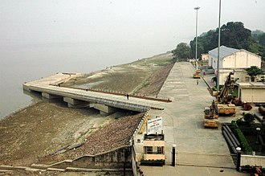

WATER BODIES
River
- Ajay River
- Bagmati
- Budhi Gandak
- Bhutahi Balan
- Gandak
- Ganges
- Ghaghra
- Phalgu
- Gandaki River
- Kamala
- Karmanasha
- Koshi River
- Mahananda River
- Mohana
- Punpun
- Sapt Koshi
- Son River
Waterfall
- Dhua Kund Falls
- Kakolat Waterfall
- Karkat Waterfall
- Madhuvdhandam Falls
- Manjhar Kund Waterfall
- North Tank Waterfall
- Telhar Waterfall
Spring (hydrosphere)
- Manjhar Kund
- Dhua Kund
- Sita Kund
- Surya Kund
- ishi Kund
Lake
- Anupam Lake
- Kharagpur Lake
- Kanwar Lake Begusarai
- Ghora Katora Darbhanga
- Gogabil Lake Katihar
- Matsyagandha Lake
Pond
- Mangal Talab
- Pandu Pokhar
Dams & reservoirs
- Indrapuri Barrage
